Rambleon Birdsong's road, one stretch at a time. Not the best route; his route.
1DarkshoreLevel 14–15
Auberdine · The Long Wash · Mist's Edge · The Veiled Sea · Bashal'Aran · Cliffspring River · Tower of Althalaxx · Twilight Vale · Ameth'Aran · Wildbend River · Grove of the Ancients · passing through Stormwind City
From Chapter 1 — Cut-Throat Alley · November 7, 2026 · 5h 26m
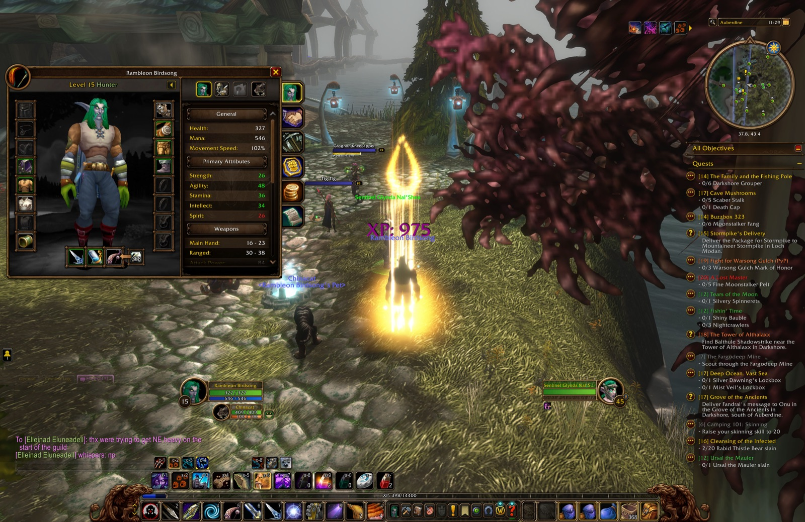
- Picked up
- The Fragments Within, WANTED: Murkdeep!, Fruit of the Sea, The Absent Minded Prospector, The Blackwood Corrupted, Buzzbox 525, The Tower of Althalaxx ×2, Tharnariun's Hope, The Fall of Ameth'Aran
- Turned in
- As Water Cascades (level 14), The Fragments Within (Auberdine, level 15), Buzzbox 323 (Cliffspring River, level 15), The Tower of Althalaxx ×2 (level 15), Cleansing of the Infected (Auberdine, level 15), Grove of the Ancients (Grove of the Ancients, level 15)
- Reached
- level 15 (Auberdine)
- First met in combat
- Raging Moonkin, Moonkin, Rabid Thistle Bear, Thistle Bear, Moonstalker, Dark Strand Fanatic, Writhing Highborne
- Loot worth keeping
- Ancestral Woollies (Uncommon), Curvewood Dagger (Uncommon), Fine Shortbow (Uncommon), War Torn Tunic of Spirit (Uncommon)
- Deaths
- 7 (Darkshore, Tower of Althalaxx · Moonstalker, Delmanis the Hated, Dark Strand Fanatic)
- Company
- Steez, Deadeye
2AshenvaleLevel 15
Maestra's Post · Astranaar
From Chapter 1 — Cut-Throat Alley · November 7, 2026 · 3h 29m
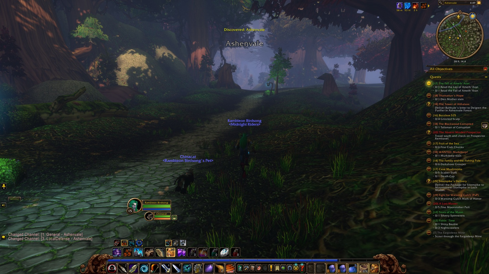
- Picked up
- The Tower of Althalaxx, The Zoram Strand
- Turned in
- The Tower of Althalaxx (Maestra's Post, level 15)
3DarkshoreLevel 15–16
Twilight Vale · Twilight Shore · The Long Wash · Auberdine · Bashal'Aran · Cliffspring River · Mist's Edge · Ameth'Aran · Wildbend River · The Master's Glaive · Remtravel's Excavation
From Chapter 1 — Cut-Throat Alley · November 7, 2026 · 1h 29m
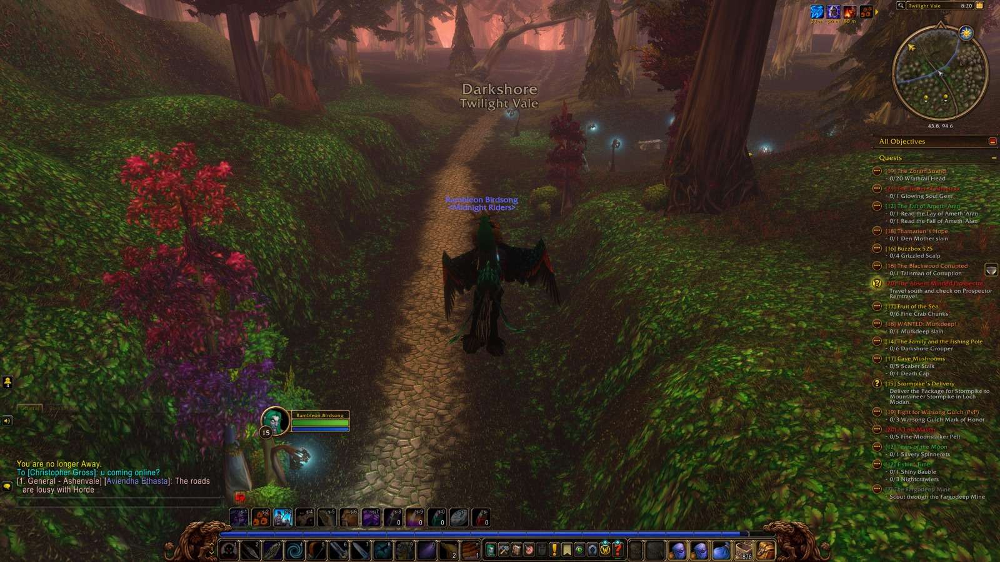
- Picked up
- Beached Sea Turtle ×3, Beached Sea Creature ×2
- Turned in
- Tharnariun's Hope (Auberdine, level 16), The Blackwood Corrupted (Auberdine, level 16), Beached Sea Turtle (Auberdine, level 16), The Fall of Ameth'Aran (Twilight Vale, level 16), The Absent Minded Prospector (Remtravel's Excavation, level 16)
- Reached
- level 16 (Mist's Edge)
- First met in combat
- Thistle Bear, Rabid Thistle Bear, Thistle Cub, Den Mother, Moonstalker, Reef Crawler, Greymist Warrior, Wailing Highborne, Writhing Highborne, Grizzled Thistle Bear, Cracked Golem, Stone Behemoth
- Loot worth keeping
- Barbaric Battle Axe of Agility (Uncommon), Timberland Cape (Uncommon), Wildkeeper Leggings (Uncommon), Short Bastard Sword of Fire Protection (Uncommon), Barbaric Cloth Gloves (Uncommon), Runic Stave (Uncommon)
- Company
- Warlight, Cassidy, Vaowyn, Moderate, Longbranch, Seler
4AshenvaleLevel 16
The Zoram Strand
From Chapter 1 — Cut-Throat Alley · November 7, 2026 · 38m
- First met in combat
- Wrathtail Razortail, Mystlash Hydra, Wrathtail Sorceress, Wrathtail Wave Rider
- Loot worth keeping
- Grunt's Belt of the Tiger (Uncommon), War Paint Legguards (Uncommon)
- Company
- El
5DarkshoreLevel 16–17
Auberdine · The Long Wash · Twilight Shore
From Chapter 1 — Cut-Throat Alley · November 7, 2026 · 3m
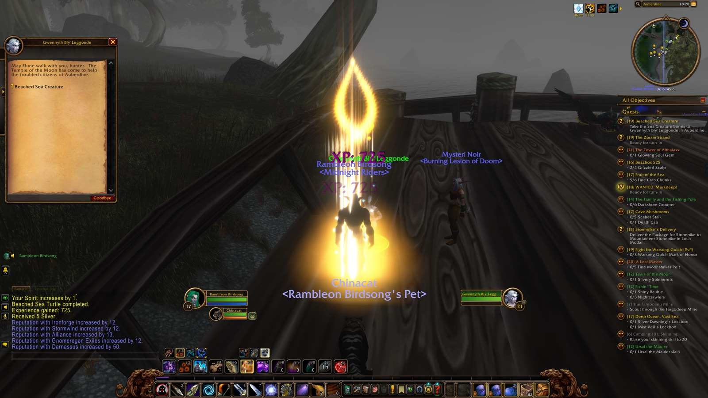
- Turned in
- Beached Sea Creature ×2 (Auberdine, level 17), Beached Sea Turtle ×2 (Auberdine, level 16), WANTED: Murkdeep! (Auberdine, level 17)
- Reached
- level 17 (Auberdine)
- Loot worth keeping
- Ridgeback Bracers (Uncommon)
6AshenvaleLevel 17
The Zoram Strand · Lake Falathim · The Shrine of Aessina · Astranaar · Maestra's Post
From Chapter 1 — Cut-Throat Alley · November 7, 2026 · 4m
- Picked up
- On Guard in Stonetalon
- Turned in
- The Zoram Strand (Astranaar, level 17)
7DarkshoreLevel 17
Twilight Vale · Twilight Shore · The Long Wash · Auberdine · Mist's Edge
From Chapter 1 — Cut-Throat Alley · November 7, 2026 · 51m
- Picked up
- Beached Sea Creature
- Turned in
- Deep Ocean, Vast Sea (Auberdine, level 17), Beached Sea Creature (Auberdine, level 17)
- First met in combat
- Greymist Seer, Greymist Coastrunner
- Loot worth keeping
- Lupine Cord of the Wolf (Uncommon), Murloc-hide Gloves (Uncommon)
- Deaths
- 2 (Mist's Edge · Greymist Coastrunner, drowning)
8AshenvaleLevel 17
The Zoram Strand · Lake Falathim · The Shrine of Aessina · Astranaar · Maestra's Post · The Ruins of Ordil'Aran · Bathran's Haunt · Fire Scar Shrine · passing through Darkshore
From Chapter 1 — Cut-Throat Alley · November 7, 2026 · 1h 19m
- Picked up
- The Tower of Althalaxx ×2
- Turned in
- The Tower of Althalaxx ×2 (Maestra's Post, level 17)
- First met in combat
- Dark Strand Adept, Voidwalker Minion, Dark Strand Excavator, Dark Strand Cultist, Dark Strand Enforcer, Ghostpaw Runner, Felslayer, Lesser Felguard, Succubus Minion, Ilkrud Magthrull, Wildthorn Stalker, Dark Strand Assassin
- Loot worth keeping
- Clergy Ring (Uncommon)
- Deaths
- 3 (The Ruins of Ordil'Aran · Voidwalker Minion, Dark Strand Adept)
- Company
- Chocolate, Assymptom
9Stormwind CityLevel 17
Stormwind Harbor · The Canals · Trade District · Dwarven District · Cut-Throat Alley · passing through Darkshore
From Chapter 1 — Cut-Throat Alley, Chapter 2 — Alther's Mill · November 7, 2026 – November 8, 2026 · 50m
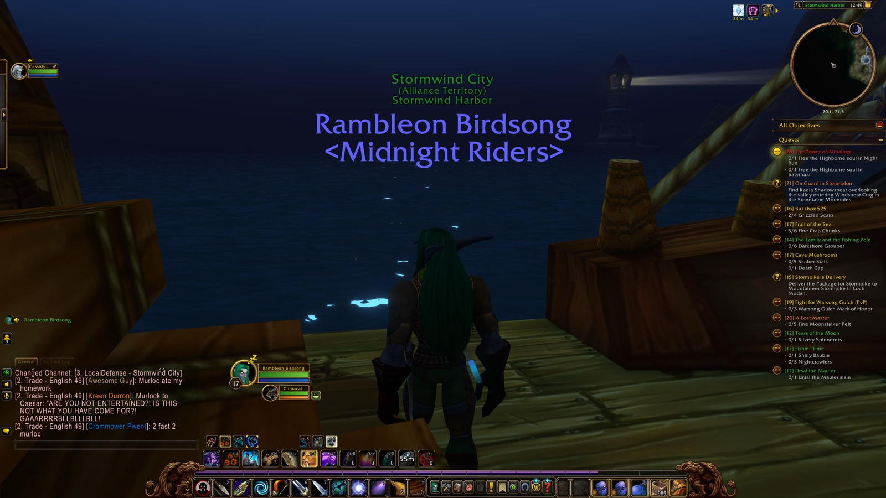
- Picked up
- Oh Brother..., Collecting Memories, Underground Assault, Trek to Ashenvale
10AshenvaleLevel 17
The Zoram Strand · Lake Falathim · The Shrine of Aessina · Astranaar · Maestra's Post
From Chapter 2 — Alther's Mill · November 8, 2026 · 3m
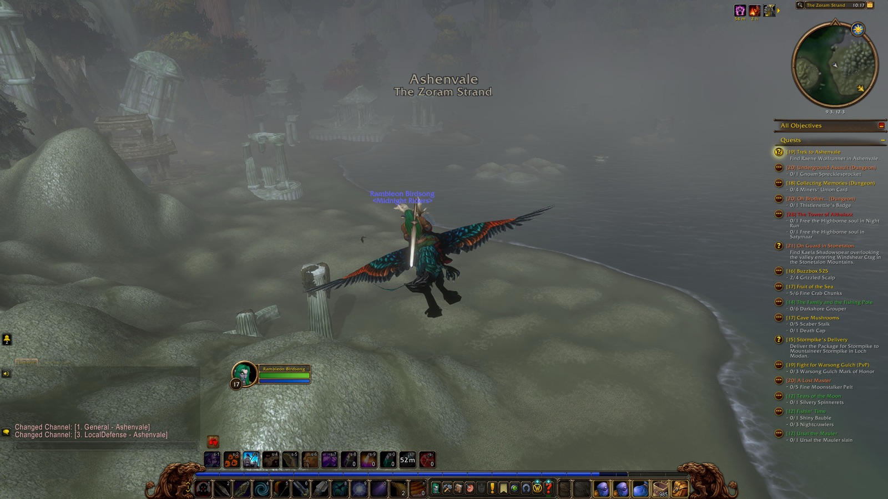
- Turned in
- Trek to Ashenvale (Astranaar, level 17)
11DarkshoreLevel 17–18
Twilight Vale · Twilight Shore · The Long Wash · Auberdine · The Master's Glaive · Grove of the Ancients · Mist's Edge · The Veiled Sea · passing through Ashenvale, Stormwind City, Elwynn Forest
From Chapter 2 — Alther's Mill · November 8, 2026 · 1h 10m
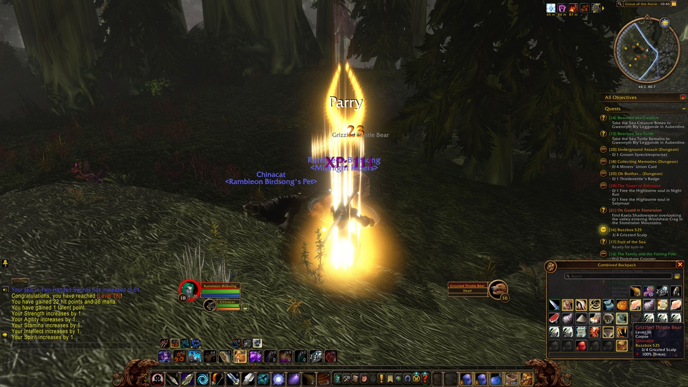
- Picked up
- Beached Sea Turtle, Beached Sea Creature
- Turned in
- Buzzbox 525 (Twilight Vale, level 18), Fruit of the Sea (Auberdine, level 18), Beached Sea Turtle (Auberdine, level 18), Beached Sea Creature (Auberdine, level 18)
- Reached
- level 18 (Grove of the Ancients)
- First met in combat
- Greymist Coastrunner, Greymist Seer, Greymist Netter, Reef Crawler, Moonstalker Matriarch, Moonstalker Runt, Moonstalker Sire, Grizzled Thistle Bear, Blackwood Ursa, Blackwood Tracker
- Loot worth keeping
- Feral Bindings of the Monkey (Uncommon), Moss Agate (Uncommon), Shucking Gloves (Uncommon)
- Deaths
- 1 (Twilight Vale · Giant Foreststrider)
12WestfallLevel 18
The Jansen Stead · Sentinel Hill · Sentinel Tower · Saldean's Farm · Furlbrow's Pumpkin Farm · Longshore · Jangolode Mine · The Molsen Farm · Gold Coast Quarry · Alexston Farmstead · Stendel's Pond · Moonbrook · passing through Elwynn Forest
From Chapter 2 — Alther's Mill · November 8, 2026 · 4h 56m
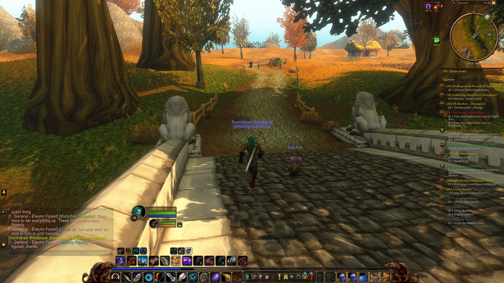
- Picked up
- Red Leather Bandanas, The Defias Brotherhood, The People's Militia ×2, Patrolling Westfall, ... and that note you found, Humble Beginnings
- Turned in
- Patrolling Westfall (Sentinel Tower, level 18), The People's Militia (Sentinel Tower, level 18)
- First met in combat
- Harvest Watcher, Defias Trapper, Fleshripper, Defias Pillager, Riverpaw Herbalist, Riverpaw Mongrel, Riverpaw Miner, Defias Looter, Defias Messenger
- Loot worth keeping
- Pioneer Trousers of Agility (Uncommon), Riverpaw Leather Vest (Uncommon), Hunting Pants (Uncommon), Tigerseye (Uncommon)
- Deaths
- 4 (Gold Coast Quarry, Alexston Farmstead · Defias Looter, Riverpaw Mongrel, Defias Pathstalker)
- Company
- Cassidy
13Redridge MountainsLevel 18
Three Corners · Lake Everstill · Lakeshire · passing through Duskwood, Elwynn Forest
From Chapter 2 — Alther's Mill · November 8, 2026 · 11m
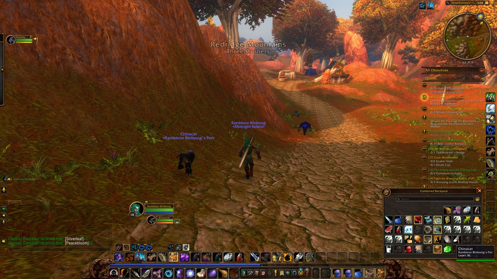
- Picked up
- Encroaching Gnolls, Assessing the Threat, Show of Force, Blackrock Menace, Blackrock Blockade, The Lost Tools, The Price of Shoes, WANTED: Gath'Ilzogg, WANTED: Incinerator Gar'im, Solomon's Law, Messenger to Stormwind, Selling Fish, WANTED: Lieutenant Fangore, Dry Times, A Free Lunch, The Defias Brotherhood, An Unwelcome Guest, Redridge Goulash, Hilary's Necklace
- Turned in
- Encroaching Gnolls (level 18), The Defias Brotherhood (Lakeshire, level 18)
14WestfallLevel 18
Sentinel Hill · Sentinel Tower · Saldean's Farm · passing through Duskwood, Elwynn Forest
From Chapter 2 — Alther's Mill · November 8, 2026 · 2m
- Picked up
- The Defias Brotherhood
- Turned in
- The Defias Brotherhood (Sentinel Tower, level 18)
15Stormwind CityLevel 18
Valley of Heroes · Trade District · The Canals · Old Town · SI:7 · Cathedral Square · passing through Elwynn Forest
From Chapter 2 — Alther's Mill · November 8, 2026 · 8m
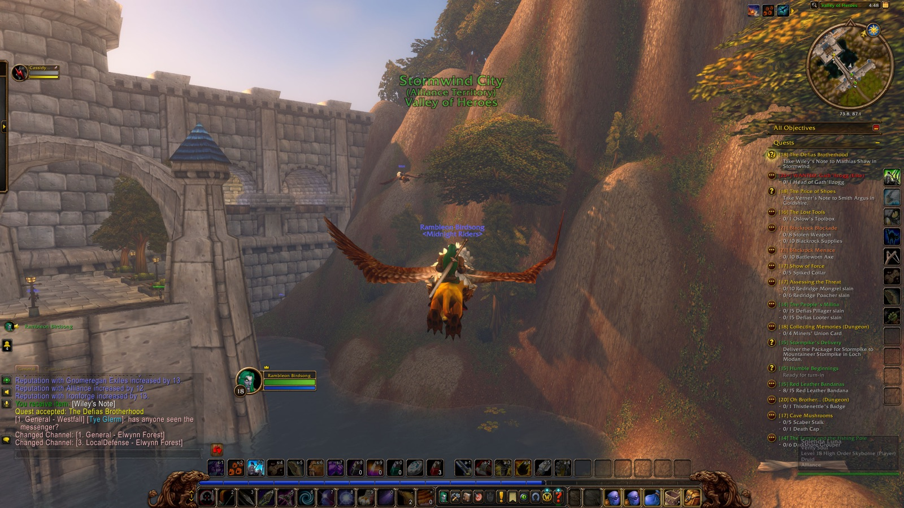
- Picked up
- The Defias Brotherhood, Messenger to Stormwind
- Turned in
- The Defias Brotherhood (SI:7, level 18), Humble Beginnings (Cathedral Square, level 18), Messenger to Stormwind (Valley of Heroes, level 18)
16Redridge MountainsLevel 18
Three Corners · Lake Everstill · Lakeshire · passing through Duskwood, Elwynn Forest
From Chapter 2 — Alther's Mill · November 8, 2026 · 7m
- Picked up
- Visit the Herbalist, Messenger to Westfall, Delivering Daffodils
- Turned in
- A Free Lunch (Three Corners, level 18), Messenger to Stormwind (Lakeshire, level 18), Visit the Herbalist (Lakeshire, level 18), Delivering Daffodils (Lakeshire, level 18)
17WestfallLevel 18–19
Sentinel Hill · Sentinel Tower · Stendel's Pond · Moonbrook · The Dagger Hills
From Chapter 2 — Alther's Mill · November 8, 2026 · 4h 09m
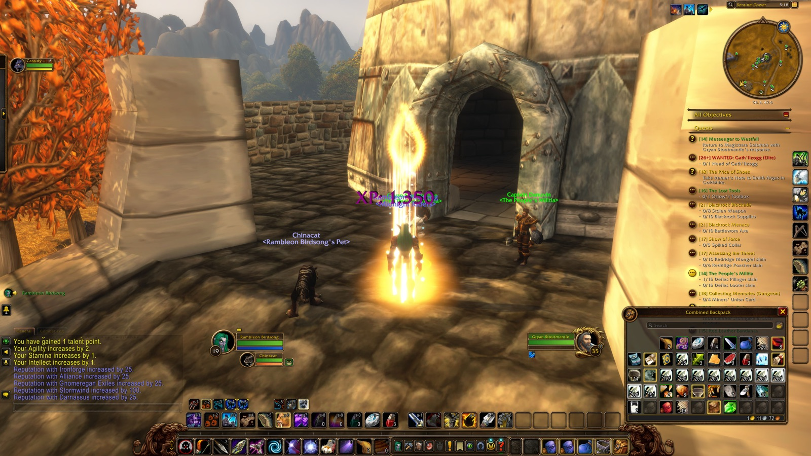
- Picked up
- The Defias Brotherhood, Messenger to Westfall, The Coastal Menace
- Turned in
- The Defias Brotherhood ×2 (Sentinel Tower, level 18), Messenger to Westfall (Sentinel Tower, level 18)
- Reached
- level 19 (Sentinel Tower)
- First met in combat
- Defias Pillager, Defias Messenger, Riverpaw Bandit, Defias Looter, Defias Henchman, Defias Digger
- Loot worth keeping
- Tigerseye (Uncommon), Nomad Tunic of the Falcon (Uncommon)
- Company
- Cassidy, Ciel, Angelique, Vaowyn, El, Ityrandel, Billy
18The DeadminesLevel 19
Defias Hideout · Mast Room · Goblin Foundry · Ironclad Cove · passing through Westfall, Duskwood, Elwynn Forest
From Chapter 2 — Alther's Mill · November 8, 2026 · 1h 33m
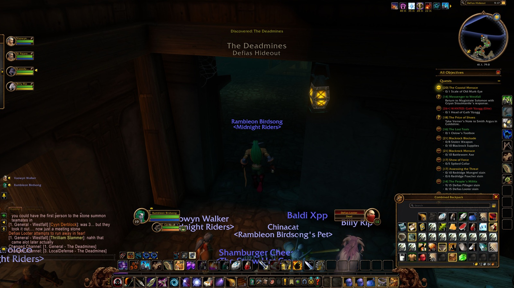
- Picked up
- The Unsent Letter, Thunderbrew
- First met in combat
- Defias Miner, Defias Overseer, Defias Evoker, Rhahk'Zor, Defias Watchman, Goblin Woodcarver, Sneed, Sneed's Shredder, Defias Strip Miner, Defias Taskmaster, Goblin Craftsman, Goblin Engineer
- Loot worth keeping
- Seer's Cape (Uncommon), Woodworking Gloves (Uncommon), Dull Sawblade (Rare), Shadowgem (Uncommon), Inscribed Leather Breastplate (Uncommon), Meadow Ring of the Eagle (Uncommon), Lavishly Jeweled Ring (Rare), Militant Shortsword of the Falcon (Uncommon), Bandit Bracers of the Falcon (Uncommon), First Mate Band (Rare)
- Deaths
- 3 (Goblin Foundry, Ironclad Cove)
- Instances
- Deadmines
- Bosses defeated
- Rhahk'Zor, Sneed, Gilnid, Mr. Smite, Captain Greenskin, Edwin VanCleef, Cookie
19Stormwind CityLevel 19
Valley of Heroes · Trade District · The Canals · Cathedral Square · Dwarven District · passing through Elwynn Forest
From Chapter 2 — Alther's Mill · November 8, 2026 · 11m
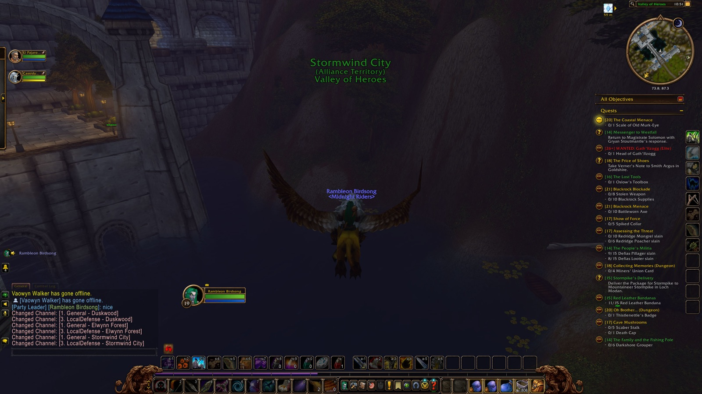
- Picked up
- Bazil Thredd, The Stockade Riots
- Turned in
- The Unsent Letter (Cathedral Square, level 19), Underground Assault (Dwarven District, level 19), Bazil Thredd (level 19)
- Loot worth keeping
- Bravo's Armbands (Uncommon)
20Redridge MountainsLevel 19
Three Corners · Lake Everstill · Lakeshire · Lakeridge Highway · Redridge Canyons · Rethban Caverns · Alther's Mill · passing through Duskwood, Elwynn Forest
From Chapter 2 — Alther's Mill, Chapter 3 — The Great Forge · November 8, 2026 – November 9, 2026 · 49m
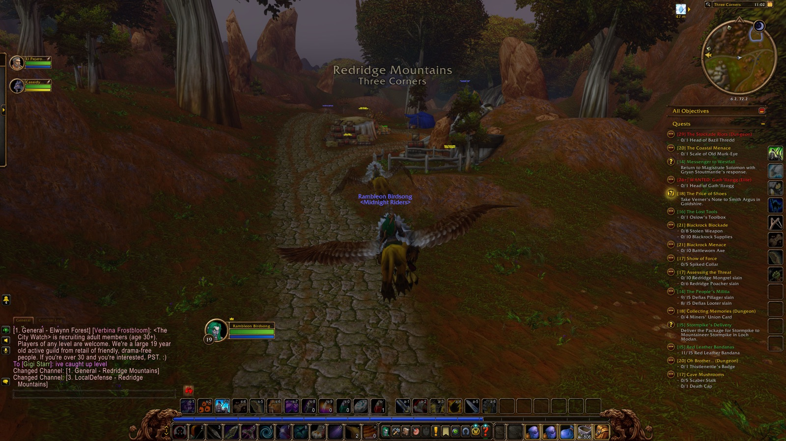
- Picked up
- Messenger to Darkshire
- Turned in
- Messenger to Westfall (Lakeshire, level 19), Show of Force (level 19)
- First met in combat
- Tarantula, Redridge Thrasher, Redridge Mongrel, Redridge Brute, Black Dragon Whelp, Blackrock Grunt, Blackrock Outrunner, Greater Tarantula, Dire Condor
- Deaths
- 1 (Three Corners · Redridge Thrasher)
21WestfallLevel 19–20
Sentinel Hill · Moonbrook · Stendel's Pond · Sentinel Tower
From Chapter 3 — The Great Forge · November 9, 2026 · 27m
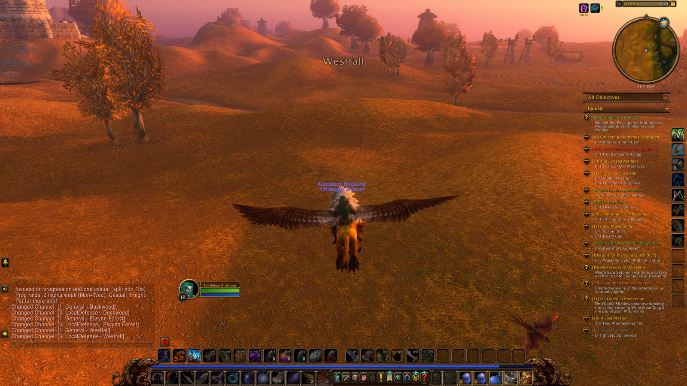
- Picked up
- The People's Militia
- Turned in
- Red Leather Bandanas (Sentinel Hill, level 19), The People's Militia (Sentinel Tower, level 20)
- Reached
- level 20 (Sentinel Tower)
- First met in combat
- Greater Fleshripper, Defias Pillager, Defias Looter
- Loot worth keeping
- Cloak of the People's Militia (Uncommon)
- Company
- Johanson, Vaowyn, El, Zolton, Cassidy
22The DeadminesLevel 20
Defias Hideout · Mast Room · Goblin Foundry · Ironclad Cove · passing through Westfall
From Chapter 3 — The Great Forge · November 9, 2026 · 1h 37m
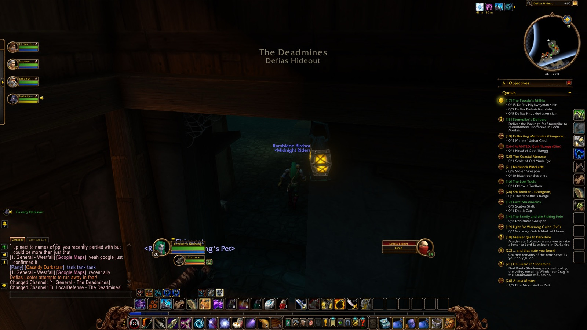
- First met in combat
- Defias Worker, Defias Miner, Defias Overseer, Defias Evoker, Defias Strip Miner, Rhahk'Zor, Defias Watchman (elite), Goblin Woodcarver, Sneed, Sneed's Shredder, Defias Taskmaster, Defias Wizard
- Loot worth keeping
- Willow Robe of Agility (Uncommon), Pattern: Brawler's Leather Armor (Rare), Light Bow (Uncommon), Gleaming Claymore of Healing (Uncommon), Merc Sword of the Boar (Uncommon), Taskmaster Axe (Rare), Blackened Defias Leggings (Rare), Raider's Boots of Shadow Protection (Uncommon), Soldier's Armor of Strength (Uncommon), Smelting Pants (Rare)
- Deaths
- 3 (Goblin Foundry, Ironclad Cove)
- Instances
- Deadmines
- Bosses defeated
- Rhahk'Zor, Sneed, Gilnid, Mr. Smite, Captain Greenskin, Edwin VanCleef, Cookie
23WestfallLevel 20
The Dagger Hills · Sentinel Hill · passing through Duskwood, Elwynn Forest
From Chapter 3 — The Great Forge · November 9, 2026 · 4m
- First met in combat
- Defias Highwayman
- Deaths
- 1 (The Dagger Hills · Defias Highwayman)
24Redridge MountainsLevel 20
Three Corners · Lake Everstill · Lakeshire · passing through Elwynn Forest
From Chapter 3 — The Great Forge · November 9, 2026 · 24m
- Picked up
- Blackrock Bounty, Murloc Poachers
- Turned in
- An Unwelcome Guest (Lakeshire, level 20)
- First met in combat
- Bellygrub, Great Goretusk
25Stormwind CityLevel 20
Valley of Heroes · Trade District · The Canals · Dwarven District · Cathedral Square · Cathedral of Light · Stormwind Keep · Royal Library · passing through Deeprun Tram
From Chapter 3 — The Great Forge · November 9, 2026 · 1h 01m
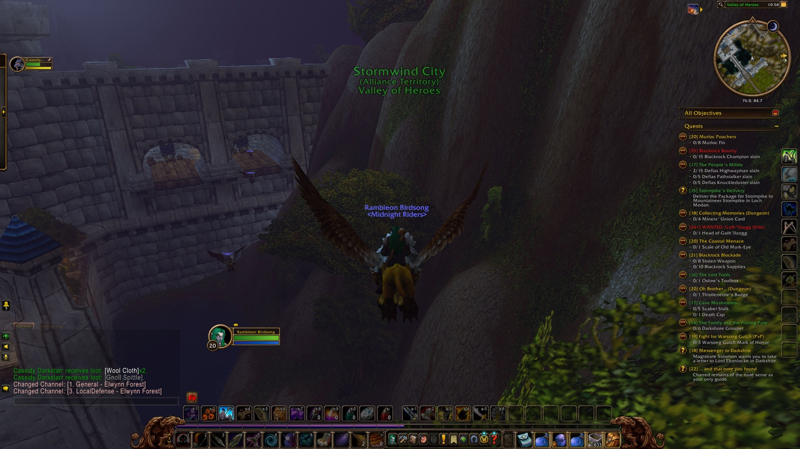
- Picked up
- Gyrodrillmatic Excavationators, Speaking of Fortitude, Tinkmaster Overspark, Brother Paxton, Claiming Arathi Basin
- Turned in
- Speaking of Fortitude (Royal Library, level 20)
26IronforgeLevel 20
Tinker Town · The Military Ward · The Great Forge
From Chapter 3 — The Great Forge · November 9, 2026 · 2m
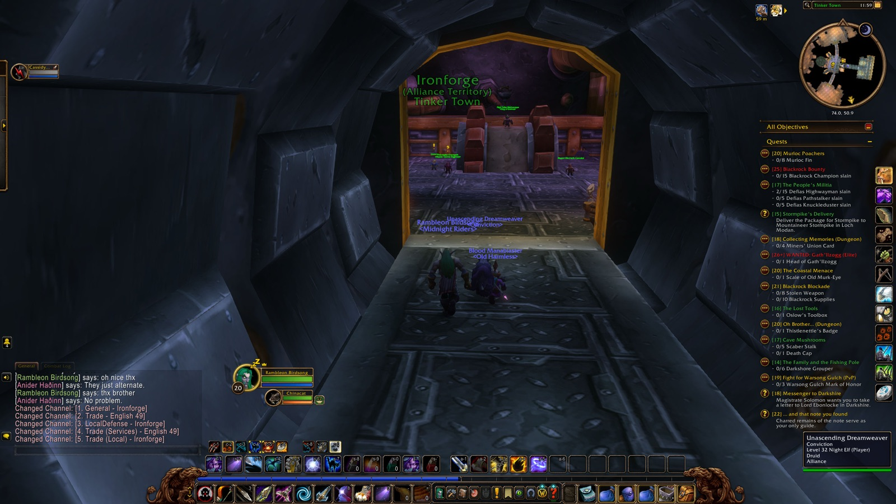
- Picked up
- Save Techbot's Brain!, Find Bingles, The Day After
- Turned in
- Tinkmaster Overspark (Tinker Town, level 20)
27Redridge MountainsLevel 20
Lakeshire · Lake Everstill · Three Corners · passing through Elwynn Forest, Stormwind City, Burning Steppes, Searing Gorge, Dun Morogh
From Chapter 3 — The Great Forge, Chapter 4 — Trade District · November 9, 2026 – November 10, 2026 · 2h 41m
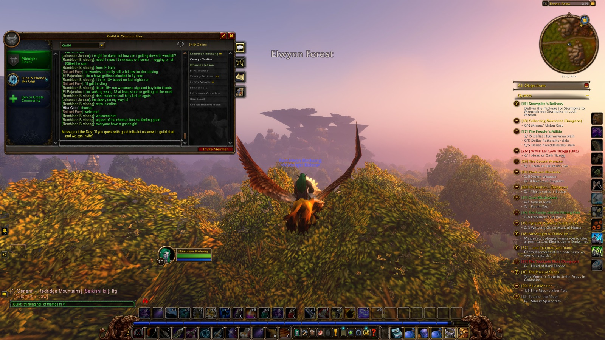
- Picked up
- The Everstill Bridge
- Turned in
- The Lost Tools (Lakeshire, level 20), Selling Fish (Lakeshire, level 20), Murloc Poachers (Lakeshire, level 20)
- First met in combat
- Murloc Flesheater, Murloc Scout
- Loot worth keeping
- Dwarven Fishing Pole (Uncommon)
- Deaths
- 1 (Lake Everstill · Murloc Flesheater)
28IronforgeLevel 20
The Great Forge · The Military Ward · Vault of Ironforge · The High Seat · passing through Dun Morogh, Searing Gorge, Burning Steppes, Elwynn Forest, Stormwind City
From Chapter 4 — Trade District · November 10, 2026 · 1h 42m
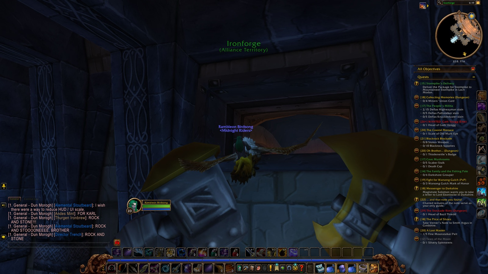
- Picked up
- The Darkmoon Faire
29Redridge MountainsLevel 20–21
Three Corners · Lakeridge Highway · passing through Elwynn Forest, Stormwind City, Burning Steppes, Searing Gorge, Dun Morogh
From Chapter 4 — Trade District · November 10, 2026 · 14m
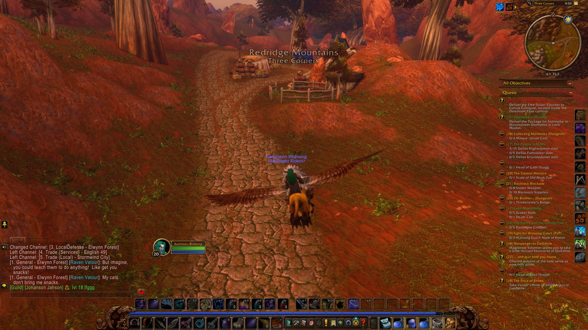
- Turned in
- Assessing the Threat (level 20)
- Reached
- level 21 (Redridge Mountains)
- First met in combat
- Redridge Poacher, Redridge Mongrel, Redridge Thrasher
- Company
- Cassidy, Vaowyn, Johanson, Snickel
30IronforgeLevel 21
The Great Forge · The High Seat · Hall of Explorers · The Forlorn Cavern · The Mystic Ward · passing through Dun Morogh
From Chapter 4 — Trade District · November 10, 2026 · 16m
- Picked up
- Knowledge in the Deeps, The Restless Dead, Important Heirlooms
- Deaths
- 1 (Ironforge)
- Instances
- The Hall of Thanes
31The Hall of ThanesLevel 21
Anvilmar's Rest · Dark Iron Ingress · Reliquary of Kings
From Chapter 4 — Trade District · November 10, 2026 · 32m
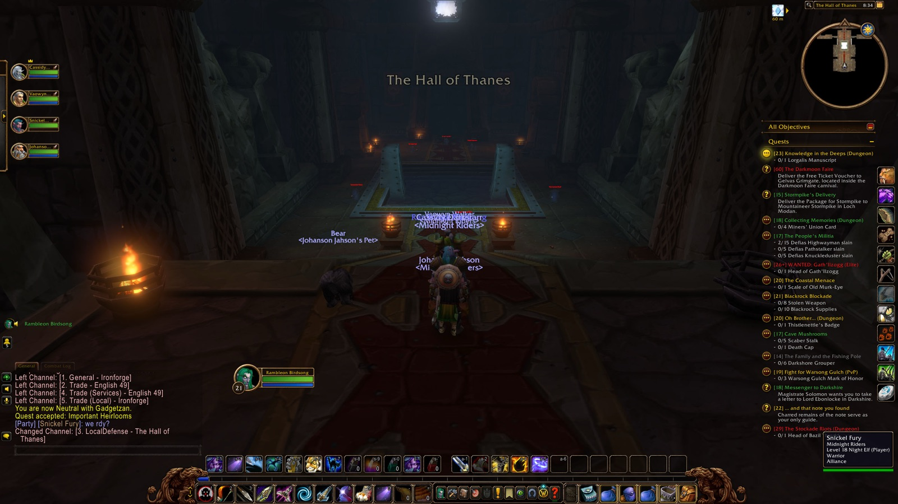
- Picked up
- An Ancient Grudge, The Treaty of Understanding
- Turned in
- An Ancient Grudge (level 21)
- First met in combat
- Faldrim Anvilmar, Bloodhound Runt, Dark Iron Looter, Dark Iron Engineer, Dark Iron Summoner, Magmatus, Fiery Assistant, Plunder, Lesser Stone Golem, Durgen Dirgehammer
- Loot worth keeping
- Deepgrave Trousers (Uncommon), Nomad Trousers of Agility (Uncommon)
- Bosses defeated
- Faldrim Anvilmar, Infurnus, Plunder, Durgen Dirgehammer
32IronforgeLevel 21
The High Seat · The Great Forge · Vault of Ironforge · passing through Dun Morogh, Searing Gorge, Burning Steppes, Elwynn Forest, Stormwind City
From Chapter 4 — Trade District · November 10, 2026 · 13m
- Turned in
- Important Heirlooms (level 21), The Restless Dead (level 21), The Treaty of Understanding (The High Seat, level 21)
- Loot worth keeping
- Dwarven Tome (Uncommon), Dusty Belt (Uncommon)
33Redridge MountainsLevel 21–22
Three Corners · Lake Everstill · Lakeshire · Redridge Canyons · Lakeridge Highway · Alther's Mill · Stonewatch Tower · Stonewatch · Galardell Valley · Tower of Ilgalar · Stonewatch Falls · Stonewatch Keep
From Chapter 4 — Trade District · November 10, 2026 · 2h 13m
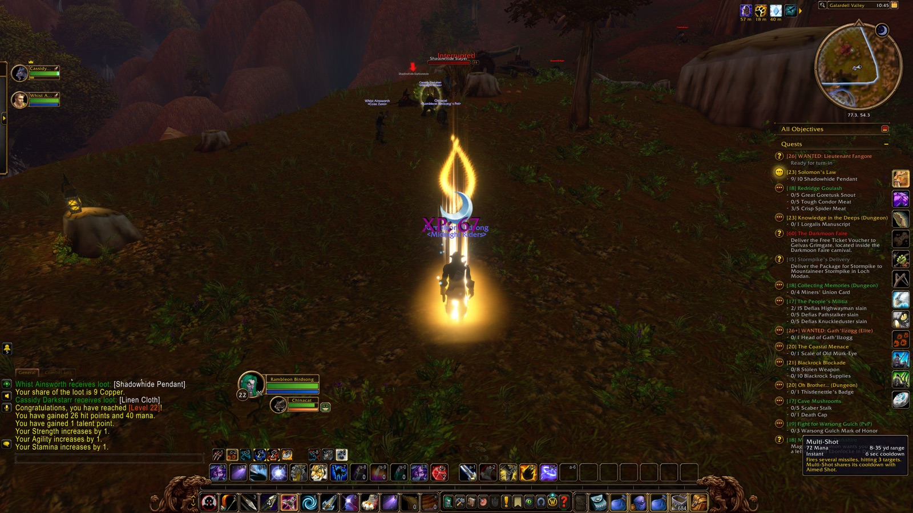
- Picked up
- Alther's Mill, What Comes Around...
- Turned in
- The Everstill Bridge (Lakeshire, level 21), Hilary's Necklace (Lake Everstill, level 21), Alther's Mill (Lakeshire, level 21), Solomon's Law (Lakeshire, level 22), WANTED: Lieutenant Fangore (Lakeshire, level 22), Blackrock Menace (Lakeshire, level 22)
- Reached
- level 22 (Galardell Valley)
- First met in combat
- Redridge Mystic, Redridge Brute, Black Dragon Whelp, Great Goretusk, Murloc Minor Tidecaller, Blackrock Grunt, Dire Condor, Greater Tarantula, Shadowhide Brute, Shadowhide Gnoll, Rabid Shadowhide Gnoll, Shadowhide Warrior
- Loot worth keeping
- Smith's Trousers (Uncommon), Shadowhide Mace (Uncommon), Defender Girdle of Defense (Uncommon), Short Ash Bow (Uncommon)
- Deaths
- 4 (Galardell Valley, Stonewatch Keep, Stonewatch · Rabid Shadowhide Gnoll, Blackrock Sentry (elite), Gath'Ilzogg (elite))
- Company
- Magus, Avanta, Whist, Thaddeus, Benny, Jirallis
34Elwynn ForestLevel 22
Goldshire · Northshire Valley · Main Hall · Library Wing · Hall of Arms · passing through Stormwind City
From Chapter 4 — Trade District · November 10, 2026 · 17m
- Picked up
- Return to Verner, Ink Supplies
- Turned in
- The Darkmoon Faire (Goldshire, level 22), The Price of Shoes (Goldshire, level 22), Brother Paxton (Library Wing, level 22)
35Redridge MountainsLevel 22
Three Corners · Lake Everstill · Lakeshire · Redridge Canyons · Render's Camp · Render's Rock · Rethban Caverns
From Chapter 4 — Trade District, Chapter 5 — Wetlands · November 10, 2026 – November 11, 2026 · 2h 54m
- Picked up
- Rethban Ore, A Baying of Gnolls, Underbelly Scales, Howling in the Hills
- Turned in
- Ink Supplies (Lakeshire, level 22), Return to Verner (Lakeshire, level 22), A Baying of Gnolls (Lakeshire, level 22), Howling in the Hills (Lakeshire, level 22), Blackrock Bounty (level 22)
- First met in combat
- Redridge Mystic, Redridge Brute, Redridge Alpha, Yowler, Blackrock Renegade, Blackrock Summoner, Blackrock Outrunner, Blackrock Tracker, Blackrock Champion, Redridge Basher, Redridge Drudger
- Loot worth keeping
- Willow Pants of Frozen Wrath (Uncommon), Ring of Iron Will (Uncommon), Inscribed Leather Belt (Uncommon), Lupine Axe (Uncommon), Burnished Gloves (Uncommon)
- Deaths
- 1 (Redridge Canyons · Redridge Alpha)
- Company
- Cassidy, Bice, Astril
36Elwynn ForestLevel 22–23
Eastvale Logging Camp · Crystal Lake · Goldshire · Northshire Valley · Main Hall · Library Wing · Ridgepoint Tower · Tower of Azora · passing through Redridge Mountains
From Chapter 5 — Wetlands · November 11, 2026 · 18m
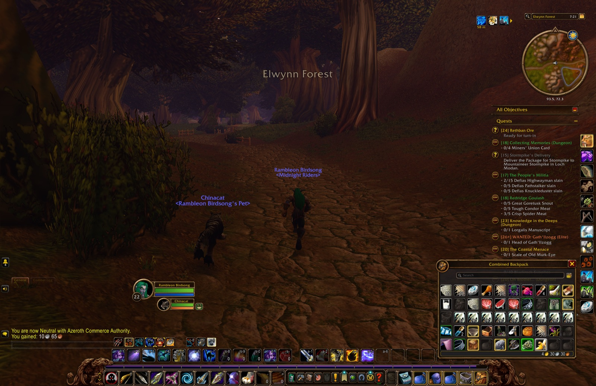
- Picked up
- Return to Kristoff
- Turned in
- Rethban Ore (Library Wing, level 22)
- Reached
- level 23 (Library Wing)
37Stormwind CityLevel 23
Valley of Heroes · Trade District · The Canals · Cathedral Square · Stormwind Harbor · passing through Darkshore, Ashenvale
From Chapter 5 — Wetlands · November 11, 2026 · 41m
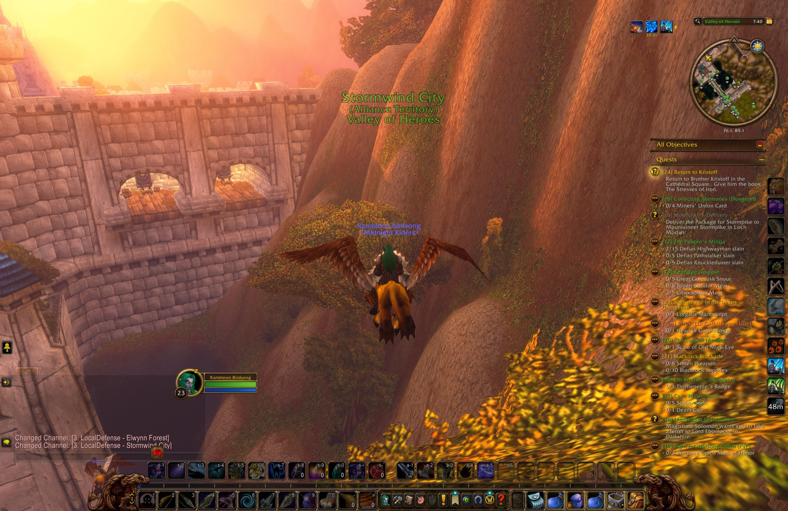
- Picked up
- Unrequited Love, Researching the Corruption, Pridewings of Stonetalon, Journey to Stonetalon Peak, Raene's Cleansing, Culling the Threat, Bathran's Hair
- Turned in
- Return to Kristoff (Cathedral Square, level 23)
- First met in combat
- Ghostpaw Runner, Clattering Crawler, Wrathtail Sorceress
- Loot worth keeping
- Wandering Boots (Uncommon), Moss Agate (Uncommon)
- Company
- Cassidy, Mordrid, Vaowyn, Woogieboogie, Arcaz
38Blackfathom DeepsLevel 23
The Drowned Sacellum · The Pool of Ask'ar · Moonshrine Ruins · The Forgotten Pool · Moonshrine Sanctum · Aku'mai's Lair
From Chapter 5 — Wetlands · November 11, 2026 · 1h 47m
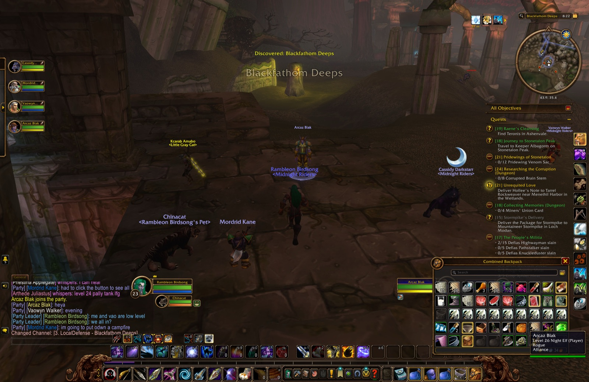
- Picked up
- In Search of Thaelrid, Blackfathom Villainy
- Turned in
- In Search of Thaelrid (The Pool of Ask'ar, level 23)
- First met in combat
- Fallenroot Satyr (elite), Blackfathom Tide Priestess (elite), Blackfathom Oracle (elite), Fallenroot Rogue (elite), Blindlight Murloc, Murkshallow Snapclaw, Ghamoo-ra, Blackfathom Sea Witch, Blackfathom Myrmidon, Fallenroot Shadowstalker, Fallenroot Hellcaller, Blindlight Muckdweller
- Loot worth keeping
- Bristlebark Cape (Uncommon), Hefty Battlehammer of Power (Uncommon), Shimmering Cloak of the Bear (Uncommon), Viridian Band of the Tiger (Uncommon), Hulking Belt (Uncommon), Twilight Lord Girdle (Rare)
- Deaths
- 1 (Moonshrine Sanctum)
- Instances
- Blackfathom Deeps
- Bosses defeated
- Ghamoo-ra, Geilhast, Old Serra'kis, Twilight Lord Kelris, Aku'mai, Lady Sarevess
39AshenvaleLevel 23
The Zoram Strand · Maestra's Post · Lake Falathim · Astranaar
From Chapter 5 — Wetlands · November 11, 2026 · 15m
- Picked up
- Raene's Cleansing ×2, An Aggressive Defense
- Turned in
- Raene's Cleansing ×2 (Astranaar, level 23)
- First met in combat
- Saltspittle Muckdweller, Saltspittle Oracle, Saltspittle Puddlejumper, Saltspittle Warrior
40DarkshoreLevel 23
Twilight Vale · Twilight Shore · The Long Wash · Auberdine · Mist's Edge · The Veiled Sea
From Chapter 5 — Wetlands · November 11, 2026 · 37m
- Turned in
- Researching the Corruption (Auberdine, level 23)
- Loot worth keeping
- Staghide Armguards (Uncommon)
- Company
- Cassidy, Vaowyn
41WetlandsLevel 23–24
Baradin Bay · Menethil Harbor · Menethil Keep · Deepwater Tavern · Menethil Bay · Bluegill Marsh · Sundown Marsh · The Green Belt · Mosshide Fen · Ironbeard's Tomb · Saltspray Glen · passing through Dun Morogh, Searing Gorge, Burning Steppes, Elwynn Forest, Stormwind City
From Chapter 5 — Wetlands, Chapter 6 — Stormwind Keep · November 11, 2026 – November 12, 2026 · 4h 02m
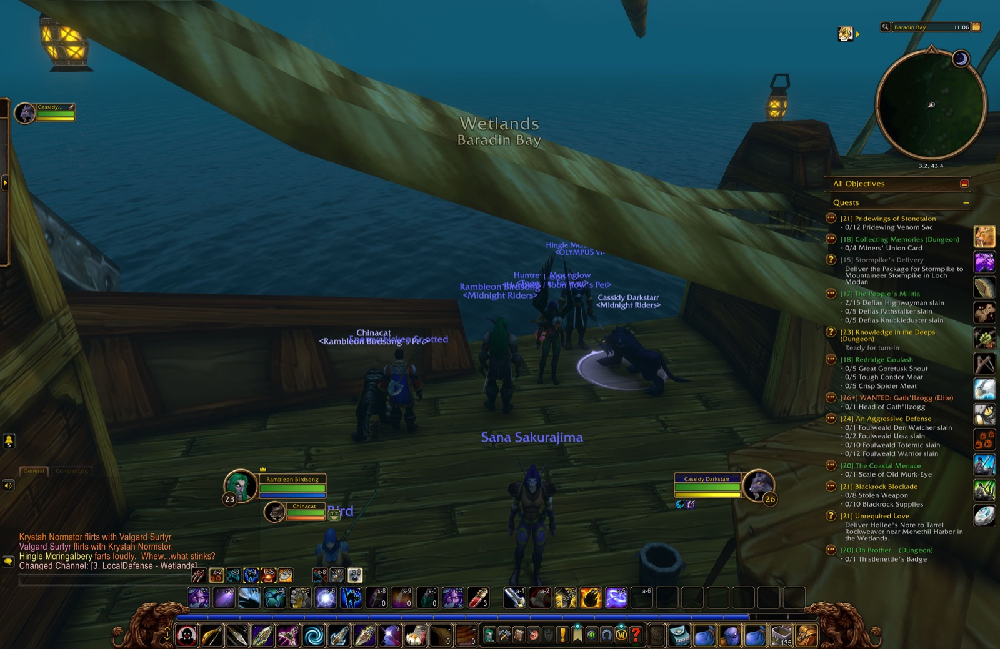
- Picked up
- Claws from the Deep, The Third Fleet, The Greenwarden, Young Crocolisk Skins, Bloom of the Heavens, Spoils of War, War Banners, From the Ashes, Alchemical Hazards, Digging Through the Ooze, In Search of the Excavation Team, Lost in the Thicket Things, Apprentice's Duties, Highland Hides, Razormaw Needling, Trying Times, Tramping Paws, Fire Taboo, Reclaiming Goods, The Search Continues, Search More Hovels, Return the Statuette ×2, A Friend of the Family, Quell the Uprising
- Turned in
- Unrequited Love (Menethil Harbor, level 23), Spoils of War (Menethil Keep, level 24), Young Crocolisk Skins (Menethil Harbor, level 24), The Greenwarden (The Green Belt, level 24), Tramping Paws (The Green Belt, level 24), Claws from the Deep (Menethil Harbor, level 24), Reclaiming Goods (Bluegill Marsh, level 24), The Search Continues (Bluegill Marsh, level 24), Search More Hovels (Bluegill Marsh, level 24), Return the Statuette ×2 (Menethil Keep, level 24)
- Reached
- level 24 (Baradin Bay)
- First met in combat
- Young Wetlands Crocolisk, Wetlands Crocolisk, Giant Wetlands Crocolisk, Bluegill Murloc, Bluegill Puddlejumper, Gobbler, Bluegill Muckdweller, Red Whelp, Mosshide Fenrunner, Mosshide Mongrel, Mosshide Gnoll, Mosshide Mistweaver
- Loot worth keeping
- Stout Battlehammer of the Falcon (Uncommon), Buccaneer's Pants of Spirit (Uncommon), Dervish Bracers of the Bandit (Uncommon), Waylaid Crate: Journeyman Parts (Uncommon), Mariner Boots (Uncommon)
- Deaths
- 6 (Menethil Harbor, The Green Belt, Mosshide Fen, Wetlands, Saltspray Glen · drowning, Dragonmaw Reclaimer (elite), Dragonmaw Infiltrator (elite), Mosshide Trapper, Mosshide Alpha, Giant Wetlands Crocolisk)
- Company
- Cassidy, Rorandiel, Vaowyn, Roderic, Spurt
- Instances
- Stormwind Stockade
42Stormwind StockadeLevel 24
Stormwind Stockade · passing through Elwynn Forest, Stormwind City
From Chapter 6 — Stormwind Keep · November 12, 2026 · 48m
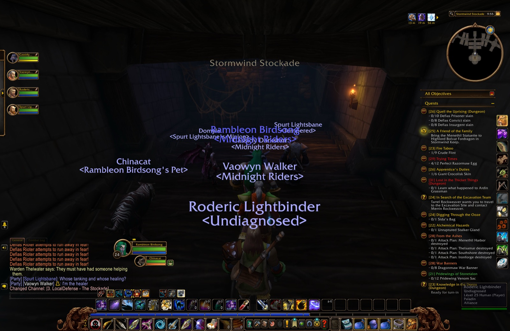
- First met in combat
- Defias Captive, Defias Convict, Defias Prisoner, Targorr the Dread, Defias Insurgent, Defias Inmate, Kam Deepfury, Hamhock, Bazil Thredd, Dextren Ward
- Loot worth keeping
- Executioner Mantle (Rare), Repurposed Rack (Rare), Sharpened Cutlery (Rare), Defias Jailbreakers (Rare), Defias Renegade Ring (Rare), Nightskulker Ring (Rare)
- Deaths
- 1 (Stormwind Stockade)
- Company
- Maester
- Instances
- Stormwind Stockade
- Bosses defeated
- Targorr the Dread, Kam Deepfury, Hamhock, Bazil Thredd, Dextren Ward
43Stormwind CityLevel 24–25
The Canals · Trade District · Cathedral Square · Old Town · SI:7 · Dwarven District · Stormwind Keep · Cathedral of Light · Royal Gallery · Valley of Heroes · passing through Elwynn Forest
From Chapter 6 — Stormwind Keep, Chapter 7 — Black Channel Marsh · November 12, 2026 – November 13, 2026 · 2h 55m
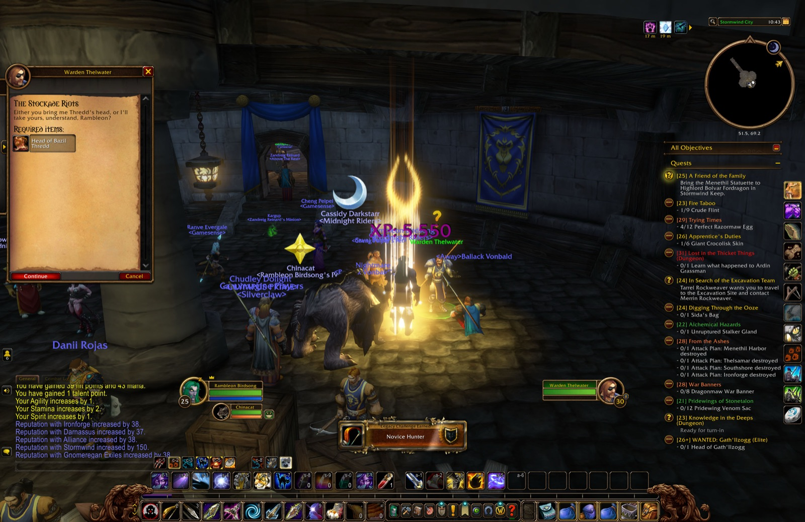
- Picked up
- The Curious Visitor, Shadow of the Past, Look to an Old Friend, The Color of Blood, Oh Brother..., A Friend of the Family, Infiltrating the Castle, The Shamed Lieutenant, Items of Some Consequence
- Turned in
- Quell the Uprising (level 24), The Stockade Riots (level 25), The Curious Visitor (Cathedral Square, level 25), Shadow of the Past (SI:7, level 25), A Friend of the Family ×2 (Cathedral of Light, level 25), Look to an Old Friend (Trade District, level 25), Infiltrating the Castle (Stormwind Keep, level 25), Items of Some Consequence (Stormwind Keep, level 25)
- Reached
- level 25 (Stormwind City)
- Loot worth keeping
- Knight's Lance (Uncommon)
44WetlandsLevel 25–27
Deepwater Tavern · Menethil Harbor · Menethil Bay · Bluegill Marsh · Sundown Marsh · The Green Belt · Ironbeard's Tomb · Whelgar's Excavation Site · Saltspray Glen · Baradin Bay · Black Channel Marsh · Angerfang Encampment · Menethil Keep · Dragonmaw Retreat · Raptor Ridge · The Great Sea · passing through Dustwallow Marsh, The Barrens, Mulgore, Shen'dralas, Desolace, Stonetalon Mountains, Ashenvale
From Chapter 7 — Black Channel Marsh, Chapter 8 — Scarlet Raven Tavern · November 13, 2026 – November 14, 2026 · 7h 21m
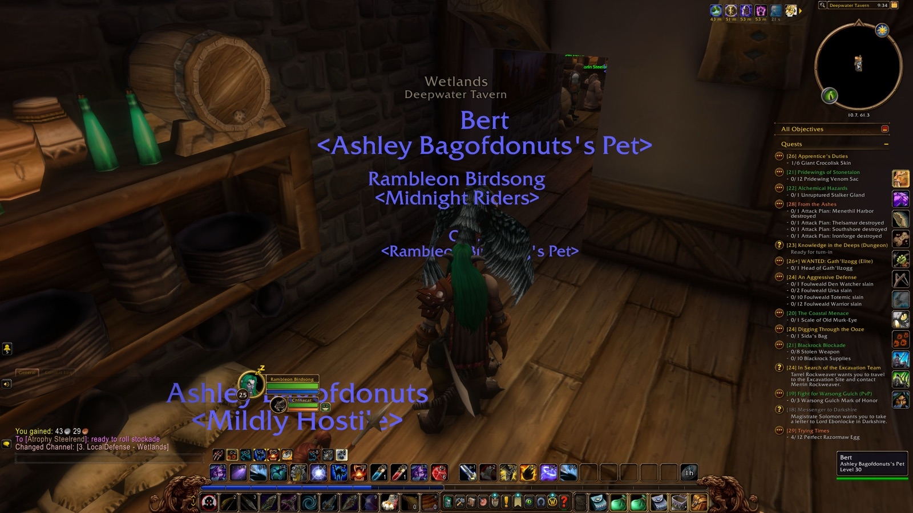
- Picked up
- Fall of Dun Modr, Blisters on the Land, Uncovering the Past, Ormer's Revenge ×3, In Search of the Excavation Team, Crocs of the Sky, The Cursed Crew, Bloom of the Heavens, Understanding Our Present, Nek'rosh's Gambit, Defeat Nek'rosh, Old Habits, Forced Disarmament, Death to the Dragonmaw, This Land Was Their Land
- Turned in
- Fire Taboo (The Green Belt, level 25), In Search of the Excavation Team ×2 (Menethil Harbor, level 25), Digging Through the Ooze (Menethil Harbor, level 25), Apprentice's Duties (Menethil Harbor, level 25), The Third Fleet (Menethil Harbor, level 25), Bloom of the Heavens (Menethil Harbor, level 26), Ormer's Revenge ×2 (Whelgar's Excavation Site, level 26), Uncovering the Past (Whelgar's Excavation Site, level 26), War Banners (Menethil Keep, level 26), From the Ashes (Menethil Keep, level 26), Nek'rosh's Gambit (Angerfang Encampment, level 26), Razormaw Needling (level 26), Trying Times (level 27), Defeat Nek'rosh (Menethil Keep, level 27), Old Habits (Menethil Keep, level 27)
- Reached
- level 26 (Menethil Bay), level 27 (Wetlands)
- First met in combat
- Mosshide Fenrunner, Young Wetlands Crocolisk, Mosshide Trapper, Mosshide Brute, Wetlands Crocolisk, Fen Creeper, Black Ooze, Crimson Ooze, Monstrous Ooze, Dragonmaw Raider, Mottled Raptor, Mottled Scytheclaw
- Loot worth keeping
- Shimmering Trousers of Intellect (Uncommon), Massive Battle Axe of Agility (Uncommon), Skycaller (Rare), Battlesmasher of Magic (Uncommon), Malleable Chain Leggings (Uncommon), Bouquet of Auberdine Flowers (Uncommon), Bright Belt (Uncommon), Silk Mantle of Gamn (Uncommon), Scouting Tunic of the Boar (Uncommon), Polished Zweihander of Agility (Uncommon)
- Deaths
- 1 (Whelgar's Excavation Site · Mottled Razormaw)
- Company
- Mia, Marika, Chow, Back, Sprokit, Vassago, Ulquira, Dez, Piggywiggly, Fristy, Dragon, Unum, Yo, Sagar
45DarkshoreLevel 27
Twilight Shore · The Long Wash · Auberdine
From Chapter 8 — Scarlet Raven Tavern · November 14, 2026 · 23m

- Turned in
- Bloom of the Heavens (Auberdine, level 27)
46AshenvaleLevel 27
The Zoram Strand · Lake Falathim · The Shrine of Aessina · Astranaar · Greenpaw Village · Raynewood Retreat · Nightsong Woods · Moonwell · The Shady Nook · Falfarren River · Xavian · Night Run · Satyrnaar · Forest Song · The Dor'Danil Barrow Den · Splintertree Post · Southfury River · passing through Azshara
From Chapter 8 — Scarlet Raven Tavern · November 14, 2026 · 5h 39m
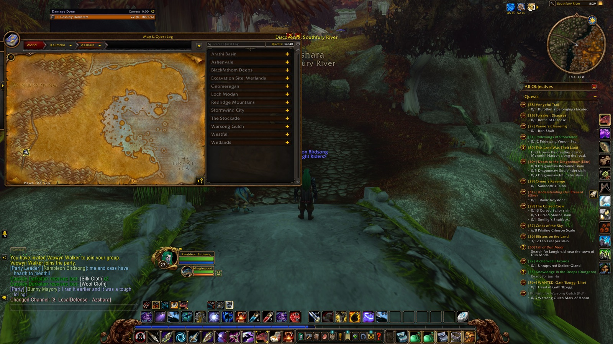
- Picked up
- Kayneth Stillwind, Pridewings of Stonetalon, Raene's Cleansing, Gleaming Crescent Necklace, Forsaken Diseases, Vengeful Trail
- Turned in
- Raene's Cleansing (Moonwell, level 27), Kayneth Stillwind (Forest Song, level 27), Gleaming Crescent Necklace (Astranaar, level 27), An Aggressive Defense (Astranaar, level 27)
- First met in combat
- Foulweald Den Watcher, Foulweald Warrior, Foulweald Ursa, Foulweald Shaman, Foulweald Totemic, Foulweald Pathfinder, Enraged Foulweald, Shadowhorn Stag, Ashenvale Bear, Elder Ashenvale Bear, Ghostpaw Alpha, Wildthorn Venomspitter
- Loot worth keeping
- Recipe: Elixir of Detect Lesser Invisibility (Uncommon), Replica Crescent Necklace (Uncommon)
- Deaths
- 3 (Xavian, The Dor'Danil Barrow Den, Nightsong Woods · Xavian Felsworn, Forsaken Intruder, Splintertree Guard)
- Company
- Cassidy, Klng, Honeydew, Torvald, Sachodeus, Bunny, Vaowyn
47WetlandsLevel 27
Deepwater Tavern · Menethil Harbor · Menethil Bay · Bluegill Marsh · Sundown Marsh · The Green Belt · Thelgen Rock · Excavation Site: Wetlands · passing through Excavation Site: Wetlands
From Chapter 8 — Scarlet Raven Tavern · November 14, 2026 · 19m

- Picked up
- Songblade Search
- Turned in
- This Land Was Their Land (level 27)
- First met in combat
- Highland Spider
- Company
- Totemic
- Instances
- Excavation Site: Wetlands
48Excavation Site: WetlandsLevel 27
Lost Marsh · Stalker's Thicket · Lost Dig Site · Site of the Guardian · passing through Wetlands
From Chapter 8 — Scarlet Raven Tavern · November 14, 2026 · 1h 02m
- Picked up
- Fallen in the Fen, Heartwoven, Lost Relic Carry
- Turned in
- Songblade Search (Lost Dig Site, level 27), Lost in the Thicket Things (Site of the Guardian, level 27)
- First met in combat
- Highland Snapper, Young Crocolisk, Elder Crocolisk, Marsh Skulker, Marsh Crocolisk, Saltspine, Young Riptooth, Thicket Lurker, Thicket Matriarch, Thicket Hunter, Shadetooth, Dragonmaw Thaumaturgist
- Loot worth keeping
- Chrome Ring of the Monkey (Uncommon), Fighter Broadsword of the Bandit (Uncommon)
- Deaths
- 2 (Lost Marsh, Stalker's Thicket)
- Instances
- Excavation Site: Wetlands
- Bosses defeated
- Saltspine, Shadetooth, Relic Guardian
49WetlandsLevel 27–28
Excavation Site: Wetlands · Thelgen Rock · Mosshide Fen · The Green Belt · Sundown Marsh · Bluegill Marsh · Whelgar's Excavation Site · Deepwater Tavern · Menethil Harbor · Menethil Bay · passing through Dun Morogh, Searing Gorge, Burning Steppes, Elwynn Forest, Stormwind City
From Chapter 8 — Scarlet Raven Tavern · November 14, 2026 · 26m

- Picked up
- Prehistoric Prism, Crime and Punishment
- Turned in
- Lost Relic Carry (Whelgar's Excavation Site, level 27), Heartwoven (Menethil Harbor, level 28), Highland Hides (Menethil Harbor, level 28)
- Reached
- level 28 (Menethil Harbor)
- Loot worth keeping
- Satchel of Potions (Uncommon)
- Company
- Bahaha, Ranes
- Instances
- Stormwind Stockade
50Stormwind StockadeLevel 28
Stormwind Stockade
From Chapter 8 — Scarlet Raven Tavern · November 14, 2026 · 42m

- First met in combat
- Defias Prisoner, Defias Captive, Defias Inmate, Defias Convict, Dextren Ward, Defias Insurgent, Kam Deepfury, Hamhock, Bazil Thredd, Targorr the Dread
- Loot worth keeping
- Moss Agate (Uncommon), Buccaneer's Orb of Nature Protection (Uncommon), Nightskulker Ring (Rare)
- Bosses defeated
- Dextren Ward, Kam Deepfury, Hamhock, Bazil Thredd, Targorr the Dread
51Stormwind CityLevel 28
The Canals · Trade District · Old Town · Valley of Heroes · passing through Elwynn Forest
From Chapter 8 — Scarlet Raven Tavern · November 14, 2026 · 5m
- Turned in
- The Color of Blood (Old Town, level 28)
52Redridge MountainsLevel 28
Three Corners · Lake Everstill · Lakeshire · passing through Elwynn Forest, Stormwind City, Burning Steppes, Searing Gorge, Dun Morogh
From Chapter 8 — Scarlet Raven Tavern · November 14, 2026 · 9m

- Turned in
- Fallen in the Fen (Lakeshire, level 28), What Comes Around... (Lakeshire, level 28)
- Loot worth keeping
- Daewyn's Girdle (Uncommon), Lucine Longsword (Uncommon)
53IronforgeLevel 28
The Great Forge · Hall of Explorers · The Library · The Forlorn Cavern · Tinker Town
From Chapter 8 — Scarlet Raven Tavern · November 14, 2026 · 29m
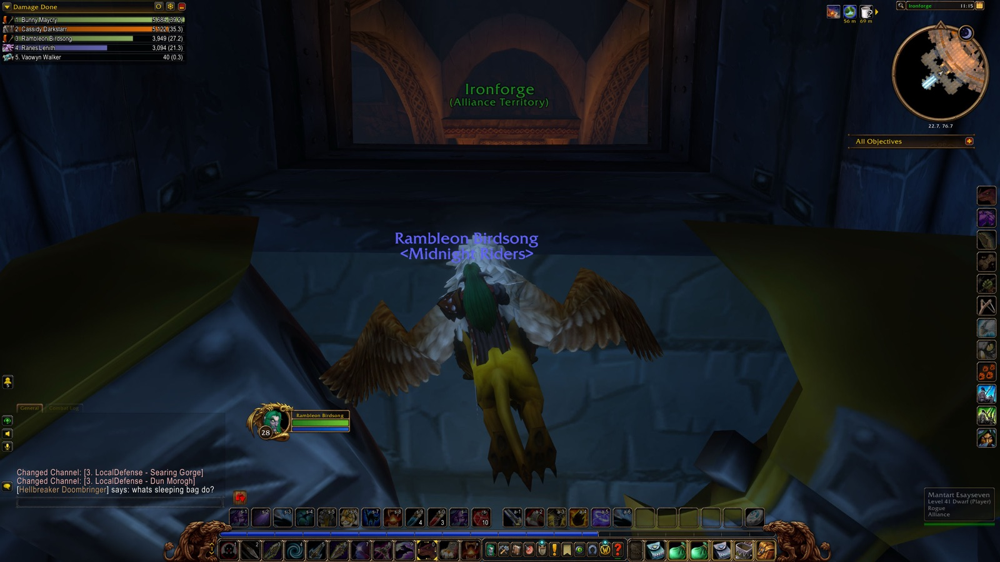
- Picked up
- Mythology of the Titans, Data Rescue, The Grand Betrayal, Essential Artificials
- Turned in
- Prehistoric Prism (Hall of Explorers, level 28), Knowledge in the Deeps (The Forlorn Cavern, level 28)
- Loot worth keeping
- Explorer's League Dustcover (Rare), Sustaining Ring (Uncommon)
54Dun MoroghLevel 28
Gates of Ironforge · Kharanos · Steelgrill's Depot · passing through Ironforge, Searing Gorge, Burning Steppes, Elwynn Forest, Stormwind City
From Chapter 8 — Scarlet Raven Tavern · November 14, 2026 · 17m
- Picked up
- Gnogaine
- Turned in
- The Day After (Kharanos, level 28)
55WestfallLevel 28–29
Saldean's Farm · Sentinel Hill · The Dead Acre
From Chapter 8 — Scarlet Raven Tavern · November 14, 2026 · 7m
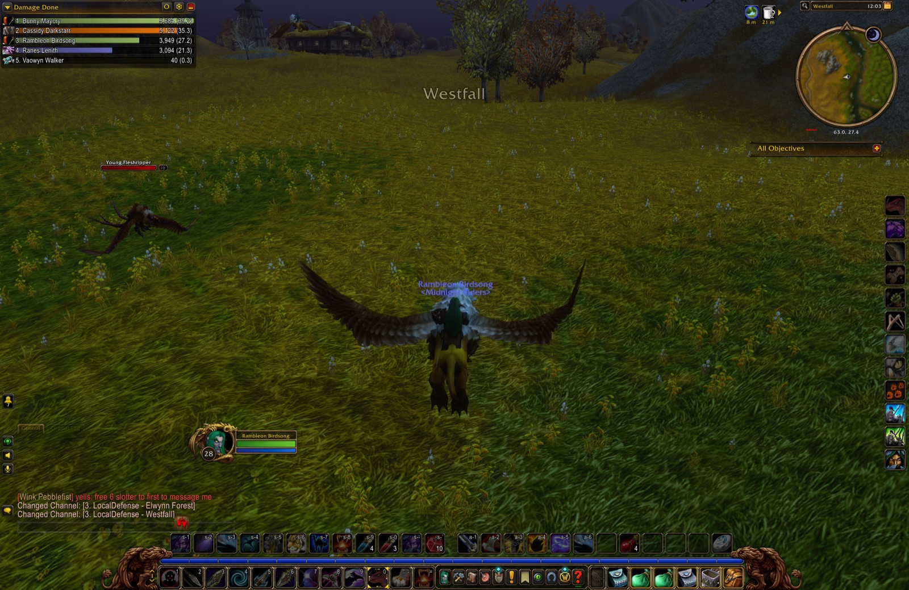
- Reached
- level 29 (Westfall)
56DuskwoodLevel 29
Darkshire · Darkshire Town Hall · Scarlet Raven Tavern · Brightwood Grove · Roland's Doom · The Rotting Orchard · The Yorgen Farmstead · Tranquil Gardens Cemetery · The Darkened Bank
From Chapter 8 — Scarlet Raven Tavern, Chapter 9 — Royal Library · November 14, 2026 – November 15, 2026 · 1h 26m

- Picked up
- Messenger to Darkshire, Worgen in the Woods ×4, The Hermit, The Night Watch ×2, The Totem of Infliction, The Legend of Stalvan ×2, An Old History Book, Look to the Stars
- Turned in
- Crime and Punishment (Darkshire Town Hall, level 29), Messenger to Darkshire (Darkshire Town Hall, level 29), The Legend of Stalvan (Darkshire Town Hall, level 29), Worgen in the Woods ×4 (Darkshire, level 29), The Night Watch (Darkshire, level 29)
- First met in combat
- Nightbane Shadow Weaver, Nightbane Dark Runner, Nightbane Worgen, Nightbane Vile Fang, Nightbane Tainted One, Gutspill, Defias Night Runner, Skeletal Mage, Skeletal Horror
- Loot worth keeping
- Ambassador's Boots (Uncommon), Consecrated Wand (Uncommon), Cloak of the Faith (Uncommon), Gleaming Claymore of Holy Wrath (Uncommon)
- Company
- Valerian, Meramera, Teleportal, Faustine, Kamandra, Friar
57Redridge MountainsLevel 29
Three Corners · Lake Everstill · Lakeshire · passing through Elwynn Forest, Stormwind City, Burning Steppes, Searing Gorge, Dun Morogh
From Chapter 9 — Royal Library · November 15, 2026 · 17m
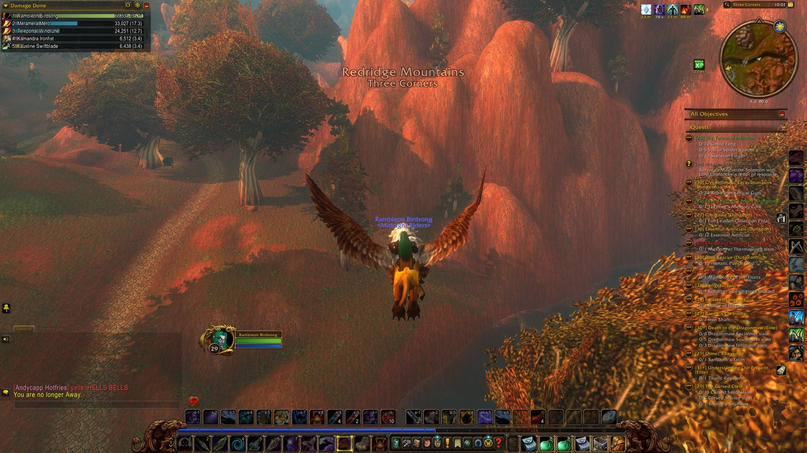
- Turned in
- Messenger to Darkshire (Lakeshire, level 29)
58IronforgeLevel 29
The Great Forge · The Military Ward · Hall of Arms
From Chapter 9 — Royal Library · November 15, 2026 · 2h 36m

- Picked up
- The Brassbolts Brothers, Stonegear's Search
59WetlandsLevel 29–30
Deepwater Tavern · Menethil Harbor · Menethil Bay · Bluegill Marsh · Sundown Marsh · Whelgar's Excavation Site · The Green Belt · Dun Modr · Direforge Hill · Dragonmaw Retreat · Dragonmaw Gates · Mosshide Fen · Menethil Keep · Baradin Bay · The Great Sea
From Chapter 9 — Royal Library · November 15, 2026 · 3h 35m

- Picked up
- Gleaning Our Future, For Further Study, Fiora Longears
- Turned in
- Ormer's Revenge (Whelgar's Excavation Site, level 29), Understanding Our Present (Whelgar's Excavation Site, level 29), Fall of Dun Modr (Dun Modr, level 29), Gleaning Our Future (Whelgar's Excavation Site, level 29), Crocs of the Sky (Menethil Harbor, level 29)
- Reached
- level 30 (Menethil Harbor)
- First met in combat
- Mottled Scytheclaw, Mottled Razormaw, Goaz Warder (elite), Sarltooth, Lost Whelp, Crimson Whelp, Red Whelp, Modr (elite), Neru (elite), Dragonmaw Infiltrator (elite), Ados (elite), Dragonmaw Reclaimer (elite)
- Loot worth keeping
- Moss Agate (Uncommon), Raptor's End (Uncommon), Excavation Cloak (Uncommon), Dervish Belt of the Sorcerer (Uncommon), Golem War Cloak (Rare)
- Deaths
- 1 (Dun Modr · Modr (elite))
- Company
- Pain, Cassidy, Chofni, Holydae
60Hillsbrad FoothillsLevel 30
The Great Sea · Eastern Strand · Western Strand · Southshore · Nethander Stead · passing through Wetlands, Dun Morogh
From Chapter 9 — Royal Library · November 15, 2026 · 3h 20m
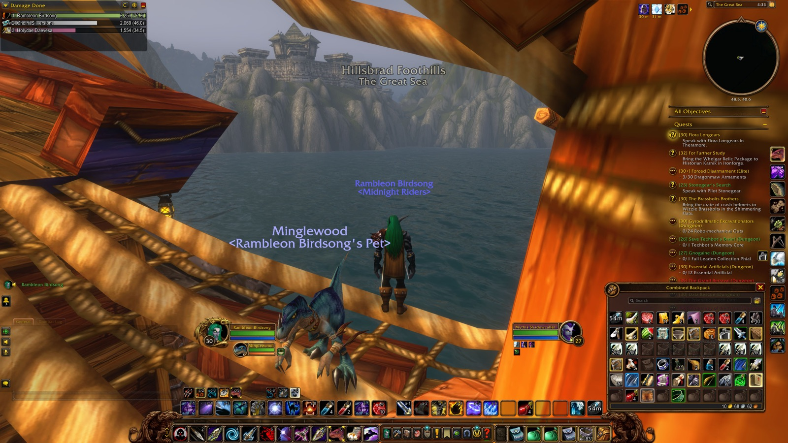
- Picked up
- Down the Coast, Talk of the Town, Soothing Turtle Bisque, Brewer's Trade, Crushridge Bounty, Bartolo's Yeti Fur Cloak, Hints of a New Plague?
- Turned in
- The Shamed Lieutenant (Southshore, level 30)
- First met in combat
- Feral Mountain Lion
- Company
- Cassidy
61IronforgeLevel 30
The Great Forge · Hall of Explorers · The Library · Tinker Town · The Military Ward · Hall of Arms · passing through Dun Morogh, Gnomeregan
From Chapter 9 — Royal Library · November 15, 2026 · 36m

- Picked up
- Ironband Wants You!, Reclaimers' Business in Desolace, Darkspear Islands Clash
- Turned in
- For Further Study (The Library, level 30)
- Company
- Unbeatable, Manbear, Hydro, Cassidy
62GnomereganLevel 30
Train Depot · Loading Room · The Clockwerk Run · The Hall of Gears · The Dormitory · The Clean Zone · Launch Bay · Engineering Labs · Tinkers' Court · passing through Dun Morogh
From Chapter 9 — Royal Library · November 15, 2026 · 1h 44m
- Picked up
- A Fine Mess, The Sparklematic 5200!, Grime-Encrusted Ring, Return of the Ring
- Turned in
- The Sparklematic 5200! ×2 (The Clean Zone, level 30), More Sparklematic Action ×2 (The Clean Zone, level 30), Grime-Encrusted Ring (The Clean Zone, level 30)
- First met in combat
- Caverndeep Pillager (elite), Techbot (elite), Caverndeep Ambusher, Caverndeep Burrower, Irradiated Pillager, Caverndeep Reaver, Chomper, Grubbis, Irradiated Slime, Corrosive Lurker, Viscous Fallout, Leprous Defender
- Loot worth keeping
- Cavalier Two-hander of the Wolf (Uncommon), Superior Belt of the Falcon (Uncommon), Jade (Uncommon), Electrocutioner Leg (Rare), Tigerseye (Uncommon), Infiltrator Shoulders of the Bandit (Uncommon), Brilliant Gold Ring (Uncommon), Iridescent Pearl (Uncommon), Shadowgem (Uncommon)
- Deaths
- 3 (Gnomeregan · a fall, Addled Leper)
- Instances
- Gnomeregan
- Bosses defeated
- Grubbis, Viscous Fallout, Electrocutioner 6000, Crowd Pummeler 9-60, Mekgineer Thermaplugg
63IronforgeLevel 30
The Military Ward · Tinker Town · Hall of Explorers · The Forlorn Cavern · The Mystic Ward · The Great Forge · passing through Dun Morogh, Searing Gorge, Burning Steppes, Elwynn Forest
From Chapter 9 — Royal Library · November 15, 2026 · 11m

- Picked up
- Gnome Improvement
- Turned in
- Save Techbot's Brain! (Tinker Town, level 30), The Grand Betrayal (Tinker Town, level 30), Return of the Ring (The Mystic Ward, level 30), Gnome Improvement (The Mystic Ward, level 30)
- Loot worth keeping
- Triprunner Dungarees (Rare), Brilliant Gold Ring (Uncommon), Silver Bar (Uncommon), Talvash's Gold Ring (Rare)
64Stormwind CityLevel 30–31
Valley of Heroes · Trade District · The Canals · Dwarven District · Stormwind Keep · Petitioner's Chamber · Royal Library · Old Town · SI:7 · Cathedral Square
From Chapter 9 — Royal Library, Chapter 10 — Western Strand · November 15, 2026 – November 17, 2026 · 37m

- Picked up
- The Perenolde Tiara, The Attack!, Southshore, The Head of the Beast, Brotherhood's End, An Audience with the King
- Turned in
- Gyrodrillmatic Excavationators (Dwarven District, level 31), An Old History Book (Royal Library, level 31), The Attack! (Trade District, level 31), The Head of the Beast (SI:7, level 31), Brotherhood's End (Cathedral Square, level 31), An Audience with the King (Stormwind Keep, level 31)
- Reached
- level 31 (Dwarven District)
- First met in combat
- Marzon the Silent Blade, Lord Gregor Lescovar
- Loot worth keeping
- Operator's Gloves (Uncommon), Seal of Wrynn (Rare)
- Company
- Jim, Cassidy
65Hillsbrad FoothillsLevel 31
Southshore · Eastern Strand · The Great Sea
From Chapter 10 — Western Strand · November 17, 2026 · 1m

- Picked up
- Preserving Knowledge
- Turned in
- Southshore (Southshore, level 31)
66WetlandsLevel 31
The Great Sea · Baradin Bay · Menethil Harbor · Deepwater Tavern · Menethil Bay · Bluegill Marsh · Sundown Marsh · Angerfang Encampment · The Green Belt · Dragonmaw Retreat · Mosshide Fen · Ironbeard's Tomb · Direforge Hill · Raptor Ridge · Dragonmaw Gates · Menethil Keep · The Lost Fleet · Saltspray Glen · passing through Hillsbrad Foothills, Arathi Highlands
From Chapter 10 — Western Strand, Chapter 11 — The Salty Sailor · November 17, 2026 – November 18, 2026 · 2h 36m
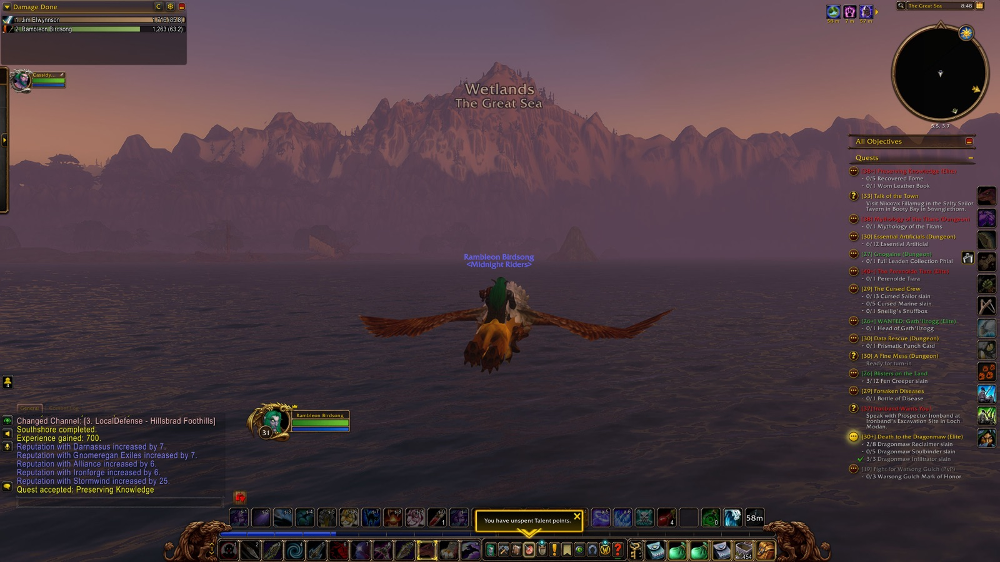
- Picked up
- James Hyal, Craftsman's Writ: Elixir of Lesser Agility, Stopping the Cycle, Lifting the Curse, Costly Menace, Syndicate Assassins, An Alarming Request
- Turned in
- Death to the Dragonmaw (level 31), Forced Disarmament (Menethil Keep, level 31), The Cursed Crew (Menethil Harbor, level 31)
- First met in combat
- Dragonmaw Raider, Dragonmaw Swamprunner, Dragonmaw Bonewarder, Skeleton, Dragonmaw Centurion, Dragonmaw Shadowwarder, Garneg Charskull (rare), Dragonmaw Soulbinder (elite), Dragonmaw Reclaimer (elite), Maddened Rotclaw, Dragonmaw Infiltrator (elite), Succubus Minion
- Loot worth keeping
- Sage's Mantle of the Channeler (Uncommon), Emblazoned Gloves (Uncommon), Banded Bracers of Stamina (Uncommon), Sage's Sash of Stamina (Uncommon), Sealed Journeyman's Writ (Rare), Craftsman's Writ: Elixir of Lesser Agility (Rare), Double Link Tunic (Rare)
- Deaths
- 2 (Dragonmaw Gates · Succubus Minion, Dragonmaw Infiltrator (elite))
- Company
- Vaowyn, Tyler, Maranos, Lilith, Neilson, Chew, Cassidy, Scáthach, Dagall
67Alterac MountainsLevel 31
Corrahn's Dagger · The Headland
From Chapter 11 — The Salty Sailor · November 18, 2026 · 25m

- First met in combat
- Hulking Mountain Lion, Mountain Lion, Syndicate Thief, Syndicate Footpad
68Hillsbrad FoothillsLevel 31
Southshore · Darrow Hill
From Chapter 11 — The Salty Sailor · November 18, 2026 · 2h 46m
- First met in combat
- Cave Yeti
69Alterac MountainsLevel 31–32
The Headland · Corrahn's Dagger · Alterac Valley · Gavin's Naze · passing through Hillsbrad Foothills
From Chapter 11 — The Salty Sailor · November 18, 2026 · 1h 51m

- Reached
- level 32 (The Headland)
- First met in combat
- Mountain Lion, Hulking Mountain Lion, Syndicate Footpad
- Company
- Alma
70Hillsbrad FoothillsLevel 32
Tarren Mill · Southshore · Southshore Town Hall · Western Strand · Eastern Strand · The Great Sea · passing through Wetlands, Dun Morogh, Searing Gorge, Burning Steppes, Elwynn Forest, Stormwind City, Westfall, Duskwood
From Chapter 11 — The Salty Sailor · November 18, 2026 · 42m
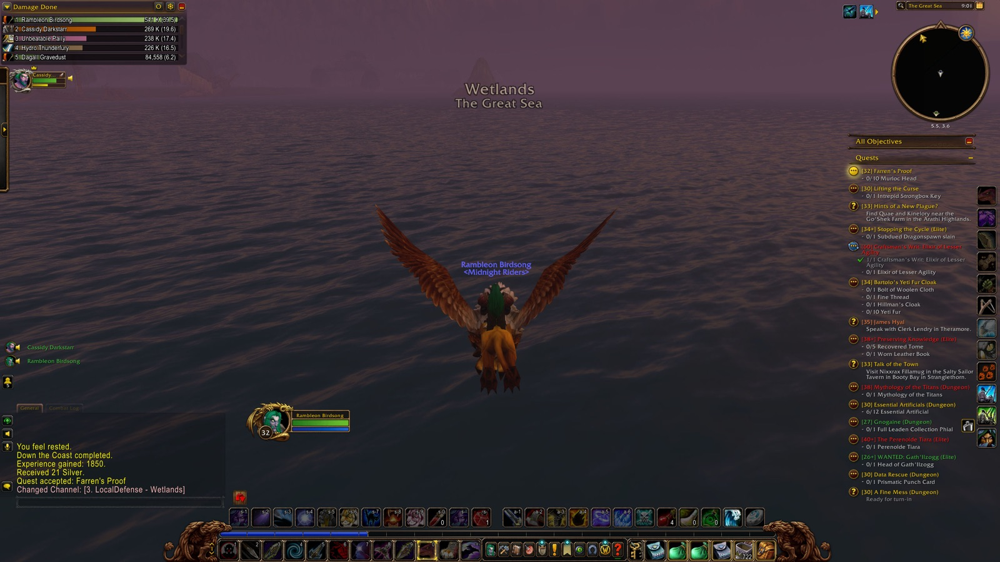
- Picked up
- Farren's Proof
- Turned in
- Costly Menace (Southshore, level 32), Syndicate Assassins (Southshore Town Hall, level 32), Down the Coast (Southshore, level 32)
- First met in combat
- Torn Fin Tidehunter, Torn Fin Oracle
- Loot worth keeping
- Shepherd's Girdle (Uncommon), Crusader Belt (Uncommon)
- Company
- Cassidy, Thunderous, Gonzobeans, Shortwon
71Stranglethorn ValeLevel 32
Nesingwary's Expedition · Tkashi Ruins · Ruins of Zul'Kunda · The Savage Coast · The Cape of Stranglethorn · Gurubashi Arena · Ruins of Jubuwal · Wild Shore · Booty Bay · The Salty Sailor Tavern · The Salty Sailor
From Chapter 11 — The Salty Sailor · November 18, 2026 · 55m
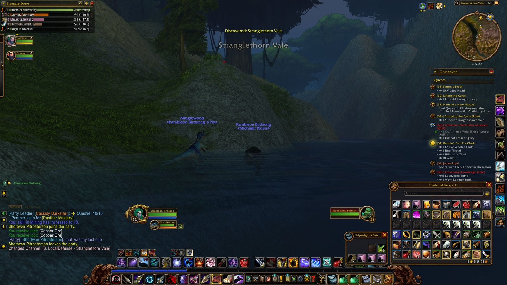
- Picked up
- Welcome to the Jungle, Raptor Mastery ×2, The Green Hills of Stranglethorn, Chapter I, Chapter II, Chapter III, Chapter IV, Tiger Mastery, Panther Mastery, Anything of Value, Singing Blue Shards, Investigate the Camp, Supplies to Private Thorsen, The Haunted Isle, Bloodscalp Ears, Hostile Takeover, The Stone of the Tides, Scaring Shaky, Supply and Demand
- Turned in
- Welcome to the Jungle (Nesingwary's Expedition, level 32), Raptor Mastery (Nesingwary's Expedition, level 32), A Fine Mess (Booty Bay, level 32), Talk of the Town (The Salty Sailor Tavern, level 32), The Haunted Isle (Booty Bay, level 32)
- First met in combat
- Bloodscalp Axe Thrower, Young Stranglethorn Tiger, Stranglethorn Raptor, Crystal Spine Basilisk, Saltwater Crocolisk
- Loot worth keeping
- Technician's Bracers (Uncommon)
- Deaths
- 1 (The Cape of Stranglethorn · Bloodsail Mage)
- Company
- Ptis